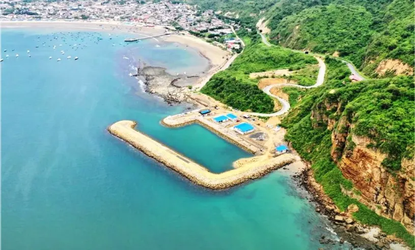

Playa de Puerto López
La playa de Puerto López es un lugar donde los visitantes pueden disfrutar del mar, caminar por la arena y observar las embarcaciones de los pescadores. Puerto López es el corazón de la provincia de Manabí, Ecuador. Es mucho más que el punto de partida para la observación de ballenas jorobadas. Es un destino donde el ecoturismo, las playas y la naturaleza se combinan para ofrecer una de las experiencias más auténticas de la costa del Pacífico. Protegidas en gran parte por el Parque Nacional Machalilla, estas playas guardan hermosos paisajes, aguas cristalinas, bosques secos tropicales y una biodiversidad sorprendente.
Playa Los Frailes
Los Frailes es una playa conocida por sus paisajes naturales. Se encuentra en el Parque Nacional Machalilla y es ideal para quienes disfrutan de la naturaleza. La playa Los Frailes tiene diferentes paisajes, desde arena blanca hasta arena oscura. Es reconocida por su belleza natural. Los visitantes pueden disfrutar de caminatas, miradores, el mar y la diversidad marina.
Actividades en las playas
- Caminar por la playa.
- Tomar fotografías del paisaje.
- Disfrutar de la vista del mar.
- Conocer los atractivos naturales.
- Pasear por el malecón y observar las embarcaciones de los pescadores.
- Realizar paseos en lancha con operadores autorizados.
- Probar platos típicos de la gastronomía manabita.
- Participar en excursiones para observar ballenas durante la temporada correspondiente.